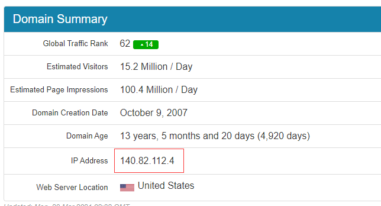

以管理员身份打开某文件
以hosts文件为例
某些文件直接修改会提示没有权限，此时可以用管理员身份进行修改
- hosts文件一般在c:window/system32/drivers/etc，打开至此文件
- 点击左上角文件选项卡
- 鼠标移至打开window powershell，选择以管理员身份打开
- 输入notepad hosts，打开之后就能修改该文件。
win+x可以直接打开快捷菜单，也能打开powershell面板
某些外网打开失败
以github为例
- 准备修改hosts文件
- 查询github网址：https://github.com.ipaddress.com/
 - 文件最后附上即可
140.82.112.4 github.com
- 本条参照https://zhuanlan.zhihu.com/p/158938544
常用快捷键
| 快捷键 | 说明 |
|---|---|
| win + R | 打开运行对话框(可打开cmd等面板) |
| win + Tab | 显示所有已经打开的窗口 |
| win + Alt | 切换打开的窗口 |
| Ctrl + Shift + Esc | 打开任务管理器 |
| win + v | 多重剪切板 |